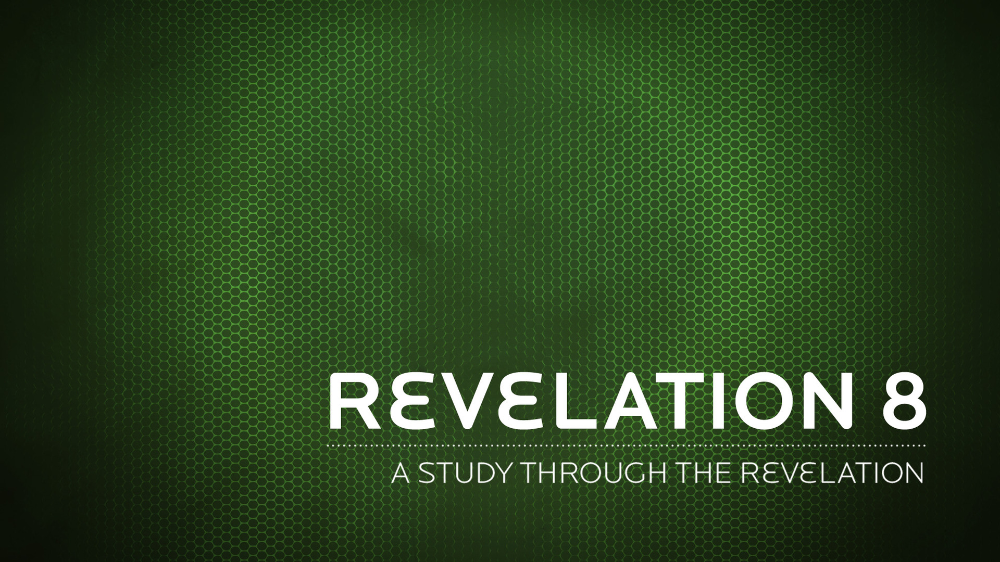

The revelation of Jesus Christ, which God gave him to show his servants what must soon take place. He made it known by sending his angel to his servant John,
Revelation 1:1 NIV
He came and took the scroll from the right hand of him who sat on the throne.
Revelation 5:7 NIV
They called out in a loud voice, “How long, Sovereign Lord, holy and true, until you judge the inhabitants of the earth and avenge our blood?”
Revelation 6:10 NIV
“Do not harm the land or the sea or the trees until we put a seal on the foreheads of the servants of our God.”
Revelation 7:3 NIV
After this I looked and there before me was a great multitude that no one could count, from every nation, tribe, people and language, standing before the throne and in front of the Lamb. They were wearing white robes and were holding palm branches in their hands.
Revelation 7:9 NIV
They called out in a loud voice, “How long, Sovereign Lord, holy and true, until you judge the inhabitants of the earth and avenge our blood?”
Revelation 6:10 NIV
The LORD was grieved that he had made man on the earth, and his heart was filled with pain.
Genesis 6:6 NIV
"I tell you the truth, if anyone says to this mountain, ‘Go, throw yourself into the sea,’ and does not doubt in his heart but believes that what he says will happen, it will be done for him.
Mark 11:23 NIV
How you have fallen from heaven, O morning star, son of the dawn! You have been cast down to the earth, you who once laid low the nations!
Isaiah 14:12 NIV